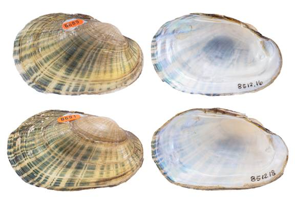

Lampsilis bergmanni Inoue and Randklev 2019
Guadalupe Fatmucket

Lampsilis bergmanni – holotype, top image, female, upper Guadalupe River [Guadalupe River drainage], length 57.0 mm; bottom image, male, upper Guadalupe River [Guadalupe River drainage], length 55.7 mm.
Identification
Shell structure: thin to moderately thick and somewhat inflated.
Shell outline: elliptical to ovate.
Posterior ridge: low and broadly rounded to barely perceptible.
Shell color: yellow-green, brown-green, yellow, or brown; surface subglossy to glossy.
Rays: prominent green or black broken rays that widen towards the margin; surface subglossy to glossy.
Shell texture: smooth.
Umbo: broad and somewhat elevated above hinge line; umbo cavity shallow to moderately deep.
Umbo sculpture: when present consists of double-looped or v-shaped ridges.
Pseudocardinal teeth: thin, triangular, compressed, thin, 2 teeth in left valve, nearly parallel to the hinge line, may be slightly divergent or appear as a single tooth, anterior tooth larger than posterior, and 1 in right valve.
Lateral teeth: relatively long, thin, nearly straight to slightly curved, 2 in left valve, 1 in right valve.
Interdentum: moderately long, narrow, may be nearly absent.
Nacre: white or bluish-white, may have a salmon or orange tint; iridescent posteriorly.
Other: sexually dimorphic, posterior margin broadly rounded to truncate in females, narrowly rounded to pointed in males; females tend to be more inflated posteriorly than males.
General Range
Endemic to upper Guadalupe River drainage of central Texas.
Habitat
Reported in slow to moderate current in sand, mud, and gravel substrates among large cobble, boulders, bedrock ledges, horizontal cracks in bedrock slabs, and macrophyte beds. Has also been observed inhabiting the roots of cypress trees and vegetation along steep banks.
Legal listing status
USFWS: Candidate
Texas: State Threatened